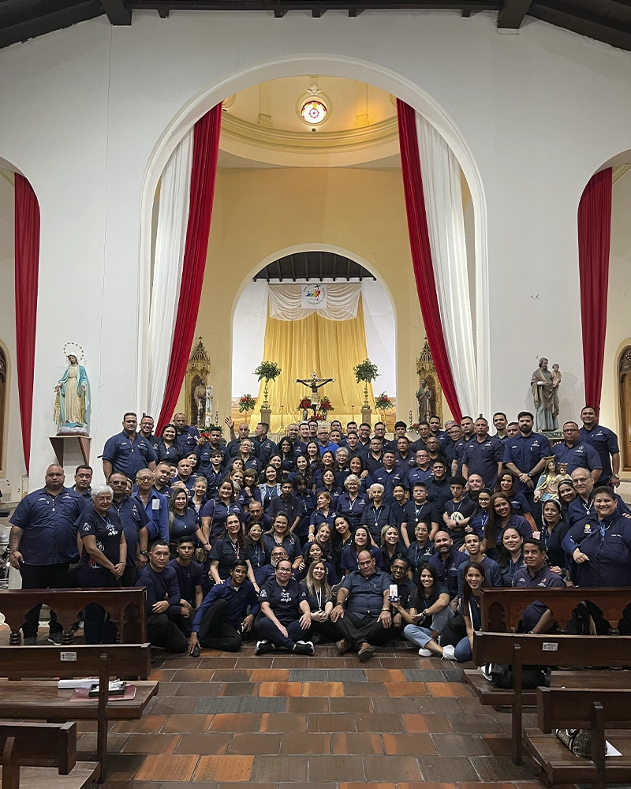
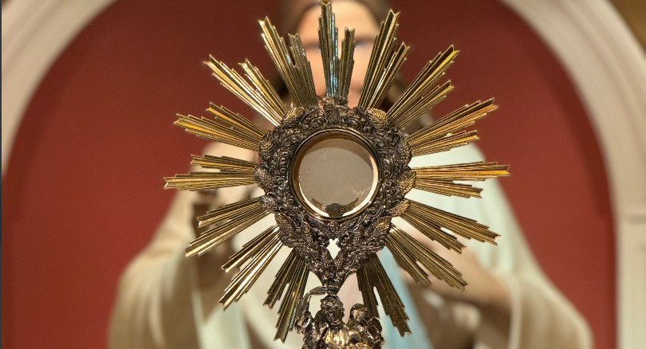
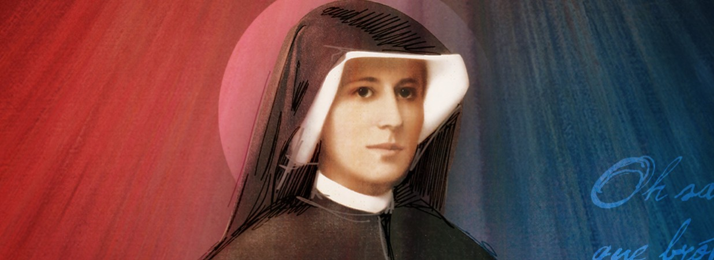
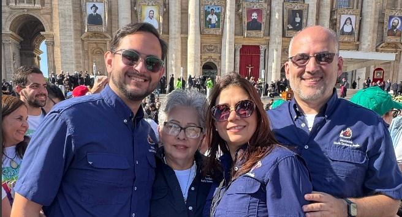
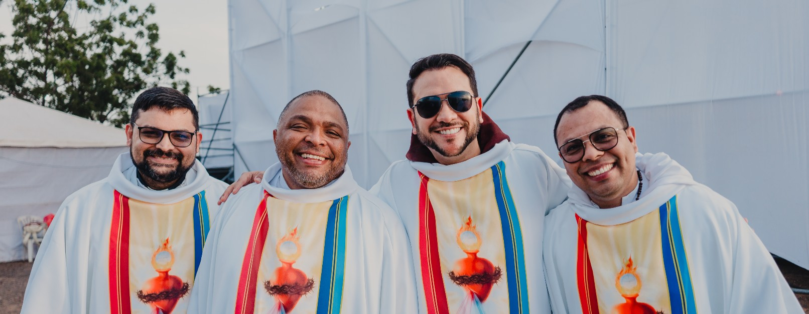

Arquidiócesis de Maracaibo · Venezuela
Quiénes Somos
Nuestra Identidad
Somos una Asociación Católica Pública de Fieles Laicos de la Arquidiócesis de Maracaibo, fundada el 16 de junio de 1992. Buscamos ser una comunidad de amor, cimentada en la vivencia de la Palabra de Dios y los Santos Sacramentos.
El centro de nuestra espiritualidad es el amor y la veneración de la Santa Eucaristía, por la Santísima Virgen María, el sacrificio y la oración como servicio de oblación por la santificación de los sacerdotes y la comunión con el Santo Padre.
Formamos parte de la gran familia del Movimiento Apostólico de la Divina Misericordia, según la espiritualidad de Santa Faustina Kowalska. Estamos llamados a impetrar la Divina Misericordia para nosotros, para nuestra nación y el mundo entero.
Esta labor la realizamos a través de la difusión de las nuevas formas de devoción a la Divina Misericordia, especialmente con la celebración de la Fiesta de la Misericordia en la Arquidiócesis de Maracaibo, y de diversas obras materiales y espirituales de la misericordia.

Asociación Pública de Fieles
Una asociación pública de fieles es una asociación de fieles de la Iglesia Católica erigida para fines que por su propia naturaleza están reservados a la autoridad eclesiástica, o a los que a juicio de ésta no se provea suficientemente con la iniciativa privada. Las asociaciones públicas de fieles son siempre personas jurídicas públicas; son voceros oficiales de la Iglesia Católica.
Personas Jurídicas Públicas de la IglesiaNuestra Historia
Fundación bajo la figura de Asociación Civil, el 16 de junio, con el propósito de servir a la Iglesia y proclamar la Divina Misericordia en Maracaibo.
Inicio del trabajo de difusión de la devoción a la Divina Misericordia, incluyendo las primeras producciones audiovisuales de la Coronilla y la Novena de la Misericordia.
A invitación de Mons. Ubaldo Ramón Santana Sequera, nuevo Arzobispo de Maracaibo, comenzamos a servir en la sacristía durante la misa de toma de posesión. Inicio del discernimiento sobre el acompañamiento a los sacerdotes.
Con ocasión del 15° aniversario de la procesión de la Misericordia, y con el respaldo de Mons. Cástor Oswaldo Azuaje, Obispo Auxiliar de la Arquidiócesis, obtenemos la primera reliquia de primer grado de Santa Faustina Kowalska conferida a una comunidad en Venezuela.
Nace el encuentro "Gracia y Misericordia", celebrado cada octubre, abierto a fieles de toda la arquidiócesis y diócesis hermanas para profundizar en la fe y venerar la reliquia de Santa Faustina.
Erección canónica por Mons. Ubaldo Ramón Santana Sequera, entonces Arzobispo de Maracaibo, como Asociación Católica Pública de Fieles Laicos.
Nuestra Espiritualidad
Los pilares que sostienen nuestra vida comunitaria y apostólica.

Eucaristía y la Virgen María
El amor y la veneración de la Santa Eucaristía, por la Santísima Virgen María, es el centro de nuestra espiritualidad. El sacrificio y la oración son nuestro servicio de oblación por la santificación de los sacerdotes y la comunión con el Santo Padre.

Divina Misericordia · Santa Faustina
Formamos parte del Movimiento Apostólico de la Divina Misericordia, según la espiritualidad de Santa Faustina Kowalska. Estamos llamados a impetrar la Divina Misericordia para nosotros, nuestra nación y el mundo entero, a través de la acción, la palabra y la oración.

Fidelidad a la Iglesia
Como Asociación Pública de Fieles, actuamos en plena comunión con la Arquidiócesis de Maracaibo y el Santo Padre, siendo voceros oficiales de la Iglesia Católica en nuestro servicio apostólico.

Santificación Sacerdotal
Acompañamos a nuestros hermanos sacerdotes mediante la oración y el sacrificio continuo por su santificación, procurando que sean fieles al ministerio al cual han sido llamados, y asistiendo materialmente a los sacerdotes pobres y/o enfermos.